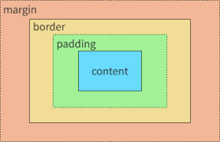

7 September 2025
Padding refers to the space inside a box that seperates the eklement from its edges. Using CSS you can add padding that will give the element like text or images some room so it doesn't touch the border. You can set padding via the CSS using pixals or percentages.
Border refers to the outside or edges of an element. It basically sits on the outside of an element and can be styled in many different ways and seperates the element text or images inside of the box from everything else.
Margin refers to the space outside of an element. You can think of it as the "personal space" around an element that stops it from bumping into other elements or the edges of the webpage. Margins are useful for keeping things on a webpage neat and easy to read because of the room you can create around each piece of content.
The best way to describe this is if you can imagine a paninting in a frame on a wall. The padding would be the spcae between the paining and the frame, the border would be the frame itself, the margin would be the space outside of the frame between the frame and other objects on the wall and the painting would be the element.
